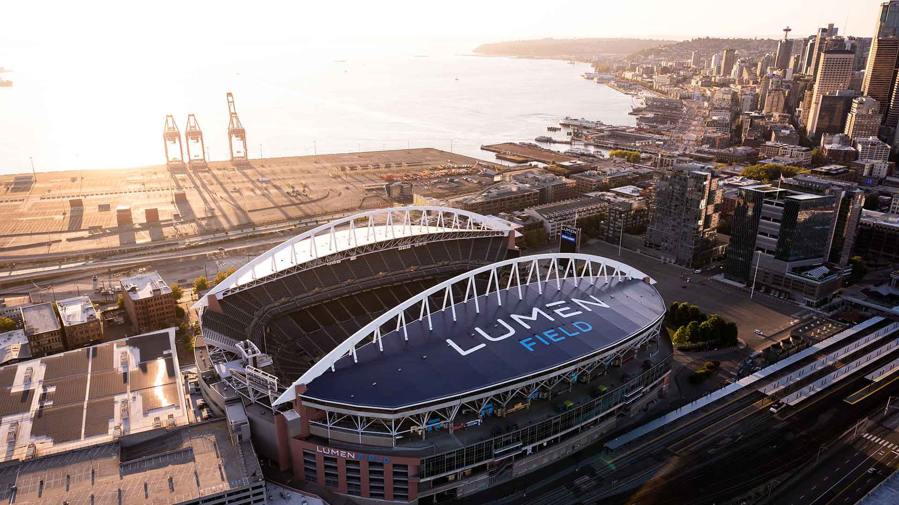

Lumen Field
The Seattle Seahawks play their home games at Lumen Field, located in the SoDo neighborhood of Seattle. Formerly known as CenturyLink Field, the stadium has been the team's home since it opened in 2002. Lumen Field is known for its passionate fan base, collectively called the "12th Man," who create a lively and loud atmosphere during games.
